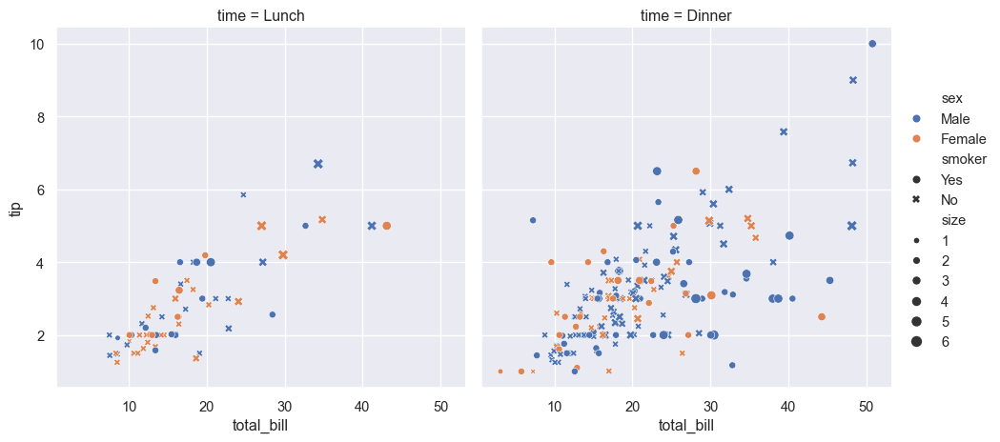
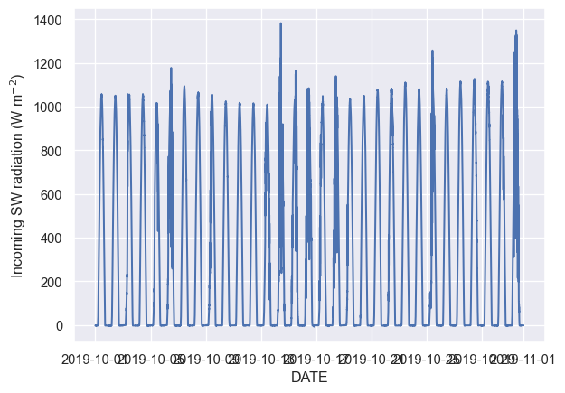
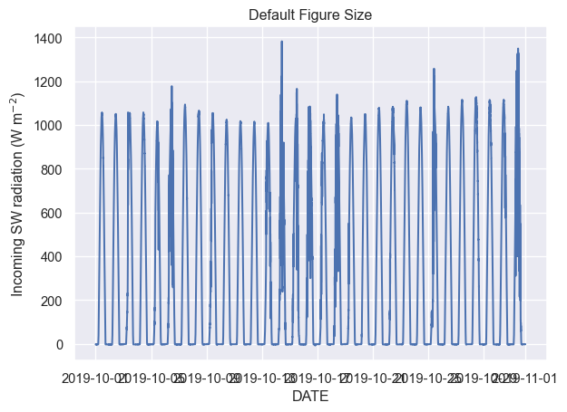
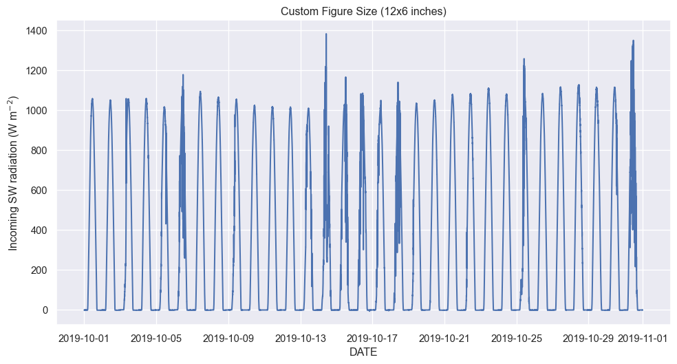
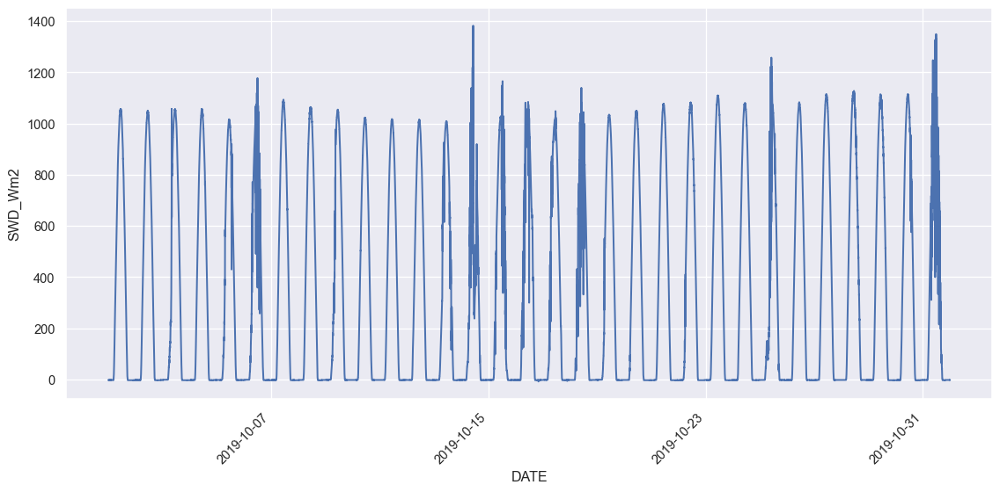
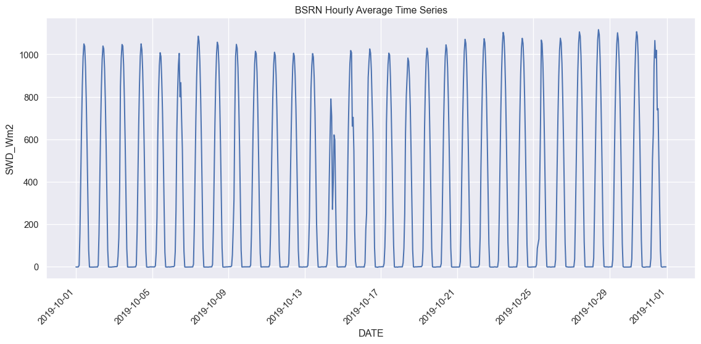

Data Visualization with Seaborn & Matplotlib (Part II)
A panda is in an art studio painting on a large canvas. The painting is in the impressionistic style. The painting depicts a statistical box plot, similar to what is often found in research articles and data science presentations.MidJourney 5
Getting Started
Before we begin our interactive session, please follow these steps to set up your Jupyter Notebook:
Open JupyterLab and create a new notebook:
Click on the + button in the top left corner
Select Python 3.10.0 from the Notebook options
Rename your notebook:
Right-click on the Untitled.ipynb tab
Select “Rename”
Name your notebook with the format: Session_XY_Topic.ipynb (Replace X with the day number and Y with the session number)
Add a title cell:
In the first cell of your notebook, change the cell type to “Markdown”
Add the following content (replace the placeholders with the actual information):
# Day X: Session Y - [Session Topic][Link to session webpage]Date: [Current Date]
Add a code cell:
Below the title cell, add a new cell
Ensure it’s set as a “Code” cell
This will be where you start writing your Python code for the session
Throughout the session:
Take notes in Markdown cells
Copy or write code in Code cells
Run cells to test your code
Ask questions if you need clarification
Caution
Remember to save your work frequently by clicking the save icon or using the keyboard shortcut (Ctrl+S or Cmd+S).
Let’s begin our interactive session!
Using the Seaborn Library
This session provides a deeper introduction to the Seaborn visualization library.
Seaborn helps you explore and understand your data. Its plotting functions operate on dataframes and arrays containing whole datasets and internally perform the necessary semantic mapping and statistical aggregation to produce informative plots. Its dataset-oriented, declarative API lets you focus on what the different elements of your plots mean, rather than on the details of how to draw them.
Here’s an example of seaborne’s capabilities.
Code
%matplotlib inline# Import seabornimport seaborn as sns# Apply the default themesns.set_theme()# Load an example datasettips = sns.load_dataset("tips")# Create a visualizationsns.relplot( data=tips, x="total_bill", y="tip", col="time", hue="sex", style="smoker", size="size",)tips.head()
total_bill
tip
sex
smoker
day
time
size
0
16.99
1.01
Female
No
Sun
Dinner
2
1
10.34
1.66
Male
No
Sun
Dinner
3
2
21.01
3.50
Male
No
Sun
Dinner
3
3
23.68
3.31
Male
No
Sun
Dinner
2
4
24.59
3.61
Female
No
Sun
Dinner
4

Behind the scenes, seaborn uses matplotlib to draw its plots. The plot above shows the relationship between five variables in the built-in tips dataset using a single call to the seaborn function relplot().
Notice that you only need to provide the names of the variables and their roles in the plot.
This interface is different from matplotlib, in that you do not need to specify attributes of the plot elements in terms of the color values or marker codes.
Behind the scenes, seaborn handled the translation from values in the dataframe to arguments that matplotlib understands. This declarative approach lets you stay focused on the questions that you want to answer, rather than on the details of how to control matplotlib.
Seaborn relplot()
The function relplot() is named that way because it is designed to visualize many different statistical relationships. While scatter plots are often effective, relationships where one variable represents a measure of time are better represented by a line. The relplot() function has a convenient kind parameter that lets you easily switch to this alternate representation:
If you compare the two calls to relplot() in the two examples so far, you will see that the size and style parameters are used in both the scatter plots (first example) and line plots (second example). However, they affect the two visualizations differently.
In a scatter plot, the size and style arguments affect marker area and symbol representation.
In a line plot, the size and style arguments alter the line width and dashing.
Allowing the same arguments (syntax) to change meaning (semantics) across different contexts is more characteristic of natural languages than formal ones. In this case, seaborn is attempting to allow you to write in a “grammar of graphics”, which is the same concept underlying ggplot created by Hadley Wickham.
The benefit of adopting this less formal specification is that you do not need to worry about as many syntax details and instead can focus more on the overall structure of the plot and the information you want it to convey.
Comparing matplotlib to seaborn
A focus of today’s activities is translation, so let’s look at translating some of the examples from yesterday’s matplotlib exercise into seaborn.
First, as always, let’s import our important packages:
✏️ Try it. Add the cell below to your notebook and run it.
Code
# Importsimport numpy as npimport pandas as pdimport matplotlib.pyplot as pltimport seaborn as sns
Basic line plots (sns.lineplot)
Let’s use a couple of common, predictable functions for an example, \(y_{\sin} = \sin{(x)}\) and \(y_{\cos} = \cos{(x)}\):
✏️ Try it. Add the cell below to your notebook and run it.
Code
# Generate a 1D array with 300 points between -5 and 5x = np.linspace(-5,5,300)# Generate sine waveysin = np.sin(x)# Generate cosine waveycos = np.cos(x)# Now let's make a dataframe from these arrays:df = pd.DataFrame({'x': x,'ysin': ysin,'ycos': ycos })
We can plot these on the same figure without instancing plt.figure() as follows:
✏️ Try it. Add the cell below to your notebook and run it.
Code
# Plot sine waveplt.plot(x,ysin)# Plot cosine waveplt.plot(x,ycos)
Seaborn uses the lineplot command to plot line plots:
✏️ Try it. Add the cell below to your notebook and run it.
Working with real-world data usually complicates things, and plotting is no exception. In particular, working with time series can get a bit messy. Let’s take a look at some data on solar radiation as an example.
✏️ Try it. Add the cell below to your notebook and run it.
You should end up with something that looks like this:
Text(0, 0.5, 'Incoming SW radiation (W m$^{-2}$)')

The x-axis looks rather messy because the tick labels are timestamps, which are, by nature, very long. Luckily, there a few approaches you can use to wrangle your x-axis labels when working with long timeseries.
Technique 1: Use figsize to alter the aspect ratio and layout.
The default figure size and aspect ratio aren’t that great for long time series, which are usually a wider aspect ratio (think old TV shows vs. widescreen movies). So, often, you can make things work a lot better by just tinkering with the figure size using the plt.figure() command and a figsize argument:
✏️ Try it. Add the cell below to your notebook and run it.
Code
# Example 1: Without explicitly setting figsizesns.lineplot(data=bsrn, x='DATE', y='SWD_Wm2')plt.ylabel(r'Incoming SW radiation (W m$^{-2}$)')plt.title('Default Figure Size')plt.show()# Example 2: With explicitly setting figsizeplt.figure(figsize=(12, 6))sns.lineplot(data=bsrn, x='DATE', y='SWD_Wm2')plt.ylabel(r'Incoming SW radiation (W m$^{-2}$)')plt.title('Custom Figure Size (12x6 inches)')plt.show()


The wider aspect ratio creates more room for your crowded x-axes labels! However, you can still see that the labels are still almost running together on the far right of the figure.
Technique 2: Rotate X-axis Labels
Another simple approach is to rotate the x-axis labels:
If your dataset spans a long time period, you might want to show fewer labels:
Code
plt.figure(figsize=(12, 6))sns.lineplot(data=bsrn, x='DATE', y='SWD_Wm2')# Show only 5 evenly spaced labelsplt.gca().xaxis.set_major_locator(plt.MaxNLocator(5))plt.xticks(rotation=45, ha='right')plt.tight_layout()plt.show()

Technique 4: Use a Time-based Moving Average
If you have too many data points, you might want to resample your data. Here we create a new column from the dataframe index (which contains our dates). We then resample the dataframe to get hourly averages of the data and plot these instead of the raw data, which is collected every minute
Code
# Ensure DATE is a datetime columnbsrn['DATE'] = pd.to_datetime(bsrn.index)# Resample to monthly meanbsrn_monthly = bsrn.resample('h', on='DATE').mean().reset_index()plt.figure(figsize=(12, 6))sns.lineplot(data=bsrn_monthly, x='DATE', y='SWD_Wm2')plt.xticks(rotation=45, ha='right')plt.title('BSRN Hourly Average Time Series')plt.tight_layout()plt.show()

Note
Advanced Axis Labeling: Date Locators and Formatters
While beyond the scope of this course, date locators and formatters in Matplotlib are powerful tools for customizing time-based axes in your plots. They allow you to:
Control which dates are shown on the axis (locators)
Determine how those dates are displayed (formatters)
These tools are particularly useful when working with time series data spanning different time scales (e.g., hours, days, months, years).
If you’re interested in learning more about these advanced techniques, here are some helpful resources:
Various examples of time series plots, some using date locators and formatters
Remember, while these tools can create more polished and precise time-based plots, the techniques we’ve covered in this course are sufficient for many basic time series visualizations.
✏️ Try it. Add a cell to your notebook and add code for the following exercise.
📚 Practice
Plot temperature and relative humidity (ideally using subplots) over the month of October 2019 at the BSRN station. Be sure to format the timestamps and include axis labels, a title, and a legend, if necessary.
Code
# Add your code here!# Step 1: Filter the dataframe to October 2019. You can use .loc to filter, as the index of the dataframe is already a datetime. Just filter from the start to end date that you want.# Step 2: Create a figure with two subplots using the `plt.subplots` command.